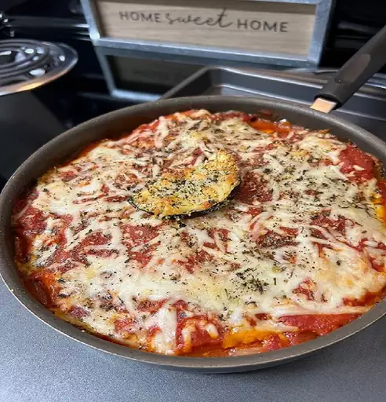

Eggplant Parmesan

This easy eggplant Parmesan recipe has layers
of crispy, breaded eggplant slices that have
been baked, instead of fried. The combination
of crunchy bread crumbs, tomato sauce,
mozzarella, and Parmesan cheese is guaranteed
to please!
Ingredients
- 3 large eggplant, peeled and
thinly sliced
- 2 large eggs, beaten
- 4 cups Italian seasoned bread
crumbs
- 6 cups spaghetti sauce, divided
- 1 (16 ounce) package mozzarella
cheese, shredded and divided
- ½ cup grated Parmesan cheese, divided
- ½ teaspoon dried basil
Steps
- Preheat the oven to 350 degrees F
(175 degrees C).
- Dip eggplant slices in beaten egg,
then in bread crumbs to coat.
Place in a single layer on a baking
sheet.
- Bake in the preheated oven for 5 minutes.
Flip and bake for 5 more minutes.
- Spread spaghetti sauce to cover the bottom
of a 9x13-inch baking dish. Place a layer
of eggplant slices in the sauce. Sprinkle
with mozzarella and Parmesan cheeses.
Repeat layers with remaining sauce, eggplant,
and cheese, ending with a cheese layer.
Sprinkle basil on top.
- Bake in the preheated oven until golden brown,
about 35 minutes.